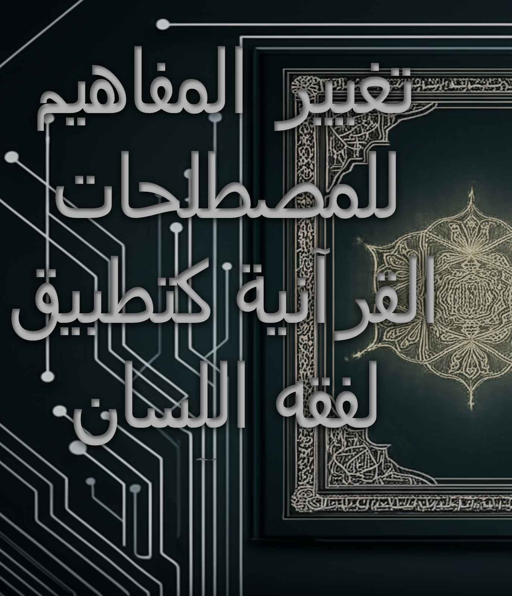
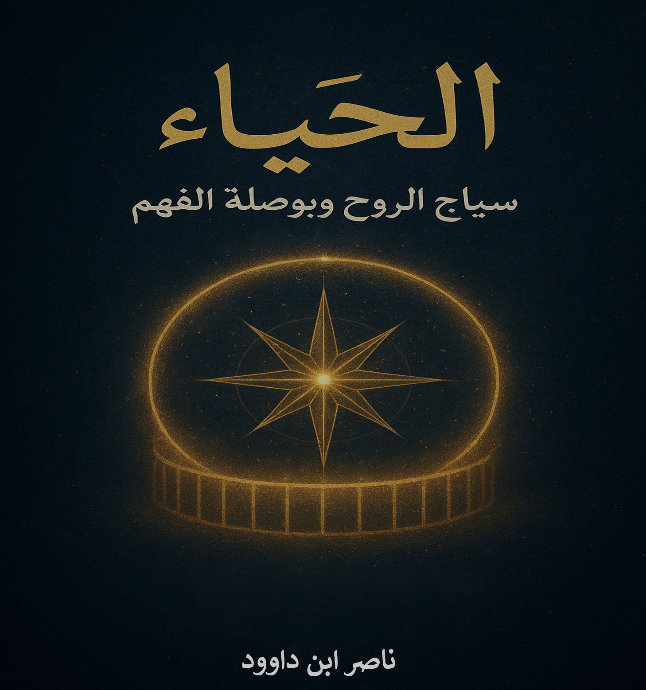

الكتب المتاحة


Towards Conscious Contemplation
A practical guide to deep understanding of the Holy Quran


ANWAR AL-BAYAN: The Uthmanic Script's Linguistic Secrets
Scientific study of the Uthmanic script and its linguistic secrets



Contemplation in the Mirror of Scripts
Practical applications of digital manuscripts in Quranic contemplation


Digitizing Quranic Manuscripts
Methodological study of digital preservation of Quranic text

Modesty: The Fence of the Soul
Study of the concept of modesty in Islam and its applications

وليكن من الموقنين: رحلة برهانية في ملكوت السماوات والأرض
دراسة فلسفية وعلمية للإيمان بالغيب